排列组合主要是训练孩子进行有序思维的能力，从而培养孩子严谨的思维习惯。
在实际生活中，我们经常碰到有多种选择的情况，这时就需要把所有的情况都考虑进去，合理正确地选择。家长可以结合实际情况，让孩子实际动手操作，体会有序思维。
日常生活中，通常遇到的需要排列的情形包括：排队问题、饭菜搭配问题（荤素搭配、主食搭配）、穿衣搭配问题（衣帽鞋的搭配）、握手问题、比赛问题（循环赛和淘汰赛），以及路线选择问题。
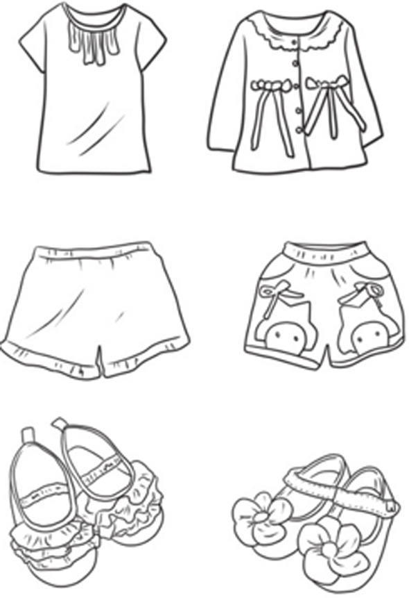
典型例题 1 长颈鹿、熊猫、河马排队，排成一行，有几种排法呢？
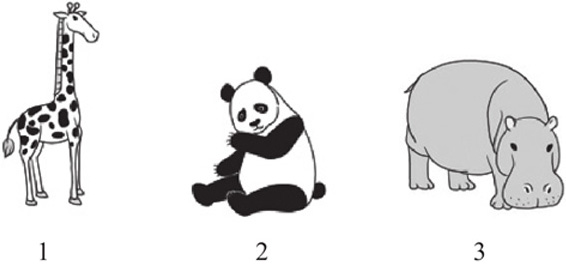
把3种动物按照一定的顺序排队，列出所有的排队情况，就能数出有多少种排法了。
如果把长颈鹿排在第1个，有2种排法。
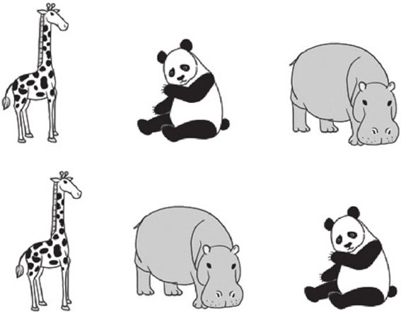
如果把熊猫排在第1位，有2种排法。
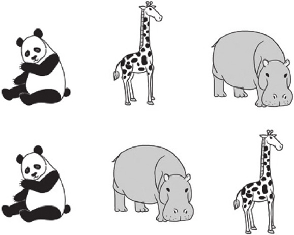
如果把河马排在第1位，有2种排法。
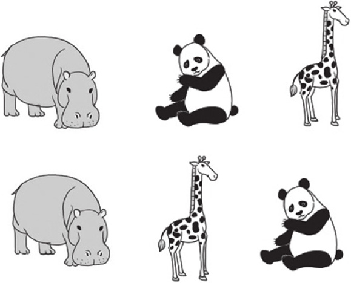
所以把3种动物排成一行，一共有2+2+2=6种排法。
典型例题 2 快餐店提供10元1份的营养早餐，早餐包括1份主食和1杯饮料，主食有3种可选，饮料有2种可选，菜单如右图所示。
如果你去吃早餐，你能有几种搭配方法？
我们考虑先选择主食，再选择饮料。
如果主食选面包，则有2种搭配方式：面包、豆浆，或者面包、牛奶。
如果主食选油条，则有2种搭配方式：油条、豆浆，或者油条、牛奶。
如果主食选三明治，则有2种搭配方式：三明治、豆浆，或者三明治、牛奶。
一共有2+2+2=6种搭配方法。
典型例题 3 莫妮卡从家到车站有一条路可以走，从车站到学校可以坐3路汽车，也可以坐5路汽车，莫妮卡从家到学校有多少种走法？
解题策略
我们把从家到车站的路线编号为1，从车站乘3路汽车到学校的路线编号为2，从车站乘5路汽车到学校的路线编号为3。莫妮卡从家到学校可以按照下面的走法。
从家走1号线到车站，从车站走2号线到学校。
从家走1号线到车站，从车站走3号线到学校。
所以莫妮卡从家到学校一共有2种走法。
典型例题 4 有4个同学进行羽毛球比赛，每2个同学之间都要打1场比赛，你知道一共要打多少场比赛吗？
我们用小圆点代替每个同学，每2个同学之间都要打1场比赛，我们就用1条直线将2个小圆点连起来，这样直线的数量就是所打比赛的场数。
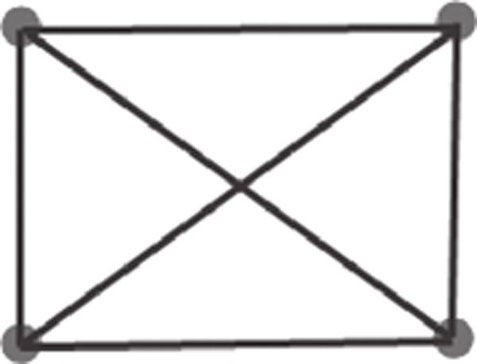
数上图直线的数量，得出一共是6条直线，所以一共要打6场比赛。
1.骆驼、绵羊、毛驴排队，排成一行，有几种排法呢？
2.鸵鸟、奶牛、兔子、鸡排队，排成一行，鸵鸟必须排在第1位，有几种排法呢？如果鸵鸟必须排在第1位，鸡必须排在最后一位，有几种排法呢？
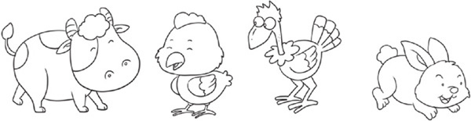
3.莫妮卡要跟妈妈出去郊游，妈妈拿给她2件上衣，3条裤子，让莫妮卡选1件上衣、1条裤子穿，你能知道莫妮卡有多少种搭配方式吗？
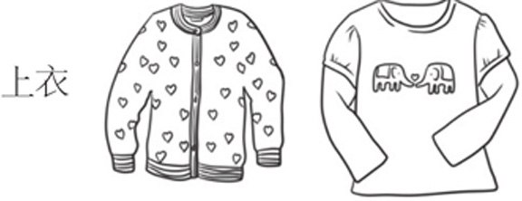
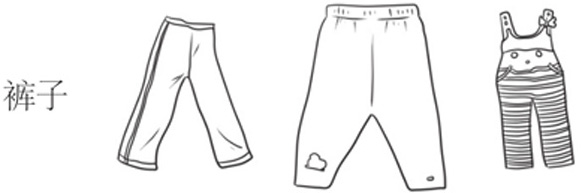
4.莫妮卡又要跟妈妈出去郊游了，妈妈拿给她2件上衣，2条短裤，2双鞋子，让莫妮卡选1件上衣、1条短裤和1双鞋子穿，你能知道莫妮卡有多少种搭配方式吗？
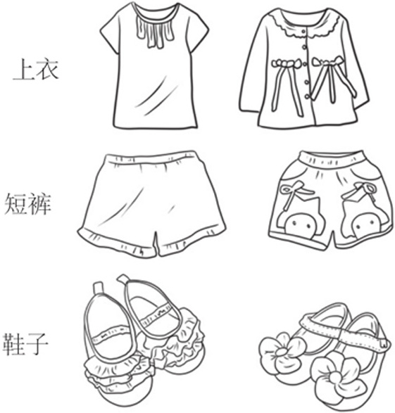
5.快餐店提供20元1份的午餐，午餐可以选1份主食、1份荤菜和1份素菜，菜单如下。
如果你去点餐，你觉得午餐有多少种搭配方式呢？
6.爸爸去参加一个一共有5个人参加的会议，如果爸爸跟每个人都要握1次手，爸爸一共需要握几次手？如果每个人之间都要握1次手，这5个人一共要握几次手？
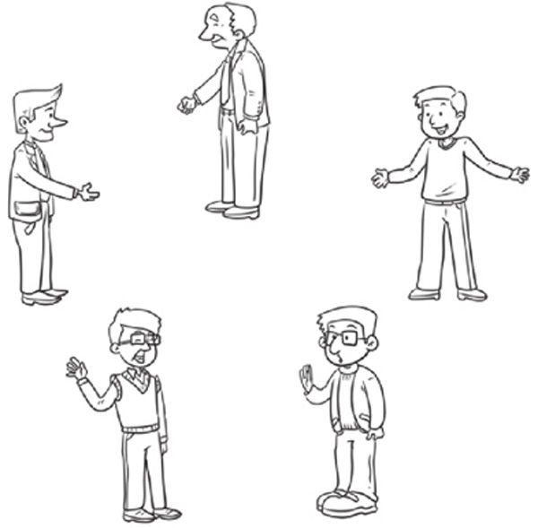
7.学校举行乒乓球比赛，一年级派出了3名同学，二年级派出了2名同学，如果一年级的同学分别要与二年级的同学各比赛1场，一共要打多少场比赛？如果所有的同学之间都要打1场比赛，一共要打多少场比赛？
8.马克周末想跟妈妈去参观动物园和植物园，从马克家到动物园有3条路可走，从动物园到植物园有2条路可走，如果马克先去动物园参观，再去植物园参观，马克有多少种不同的走法？
9.莫妮卡先去电影院看电影，看完电影去莉莉家叫上莉莉去游乐场玩。从莫妮卡家去电影院有2条路可走，从电影院去莉莉家有1条路可走，从莉莉家去游乐场有3条路可走，莫妮卡从家到游乐场有多少种不同的走法？